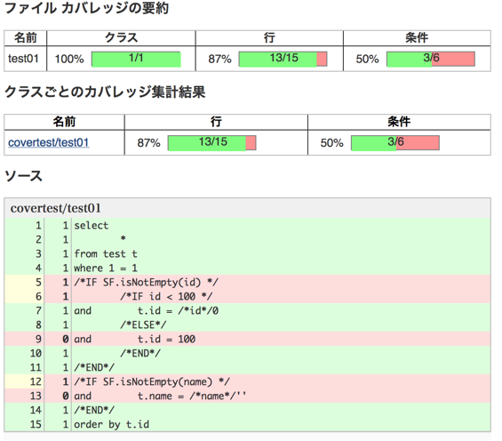

高度な操作
区分値定数/列挙型の利用
これまでSQLの開発では、区分値や定数値などの固定値がマジックナンバーとしてSQL文内に埋め込まれていました。マジックナンバーの使用は仕様変更時の調査が困難で不具合の温床になったり、可読性を下げる要因になっていました。
|
|
uroboroSQLはエンタープライズ分野での開発に利用されてきた経験から、SQL文の中でマジックナンバーを使わないための仕組みを提供しています。
区分値定数/列挙型を利用するためにはSqlConfig生成後に以下の設定を追加します。
TypeConstants.javaの内容
Gender.javaの内容
このように区分値定数や列挙型をSQL定数として登録しておくことで、SQL文の中で定数名が利用できるようになります。
参照方法は以下になります。
- 定数
CLS_[定数フィールド名大文字] - 列挙型
CLS_[定数フィールド名大文字]
実際に使用する際は置換文字列として /*#CLS[定数フィールド名大文字]*/ や /*$CLS[定数フィールド名大文字]*/ という風に使用します。
列挙型の例
SQLフィルター
This section is still under construction.
SQLカバレッジ
これまでアプリケーション上の条件分岐はカバレッジツールを利用して条件分岐の網羅率を確認することができました。
しかし、SQL文の条件分岐は実際にその分岐が通っているかどうかを確認する手段がなく、リリース後に初めて通った条件で不具合を発生させることがありました。
この問題を解決するためにuroboroSQLでは、SQL文の条件分岐を集計してカバレッジレポートを行う機能を提供します。
SQLカバレッジはuroboroSQLを利用するアプリケーションの起動時オプションに-Duroborosql.sql.coverage=trueを追加することで有効になります。
アプリケーションが実行している間に発行されるSQLについて、カバレッジ情報が収集されます。
カバレッジ情報の収集結果は標準ではtarget/coverage/sql-cover.xmlに出力されます。
このファイルの場所や名前を変更したい場合は、起動時オプションに-Duroborosql.sql.coverage.file=[出力ファイルパス]を指定してください。
出力されたsql-cover.xmlをJenkinsのCobertura pluginなどのXMLレポートとして読み込むとSQLファイルのカバレッジレポートが参照できるようになります。

エラーハンドリング
This section is still under construction.
ログ
uroboroSQLではログ出力ライブラリとしてSLF4Jを使用しています。SLF4Jの詳細は公式のドキュメントを参照して下さい。
uroboroSQLで出力されるログ内容は以下表の通りです。
| クラス名 | TRACE | DEBUG | INFO | WARN | ERROR | FATAL |
|---|---|---|---|---|---|---|
| AbstractAgent | 変換前SQL | 実行時SQL | - | - | - | - |
| DebugSqlFilter | - | パラメーター/ |
- | - | - | - |
| IfNode | - | 評価式/ |
- | - | - | - |
| Parameter | - | パラメーターの設定 | - | サブパラメーター値にNULLを設定 | - | - |
| SecretColumnSqlFilter | - | バッチ処理追加件数/ |
- | - | - | - |
| SqlAgent | ステートメントのクローズ | 処理実行アナウンス/ |
- | - | エラーメッセージ | - |
| SqlContext | - | バッチ処理追加件数/ |
- | - | - | - |
| SqlContextFactory | - | 定数パラメーター | - | 定数名の重複 | エラーメッセージ | - |
| SqlLoader | SQL定義ファイルの読み込み完了 | SQL定義ファイルの読み込み開始/読み込み中 | - | - | デフォルトファイルパスの設定/ |
- |